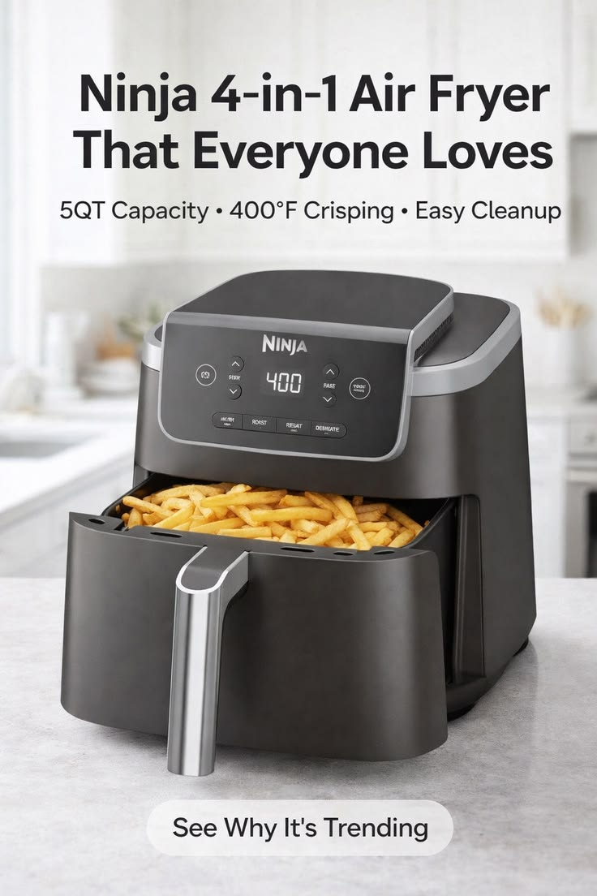
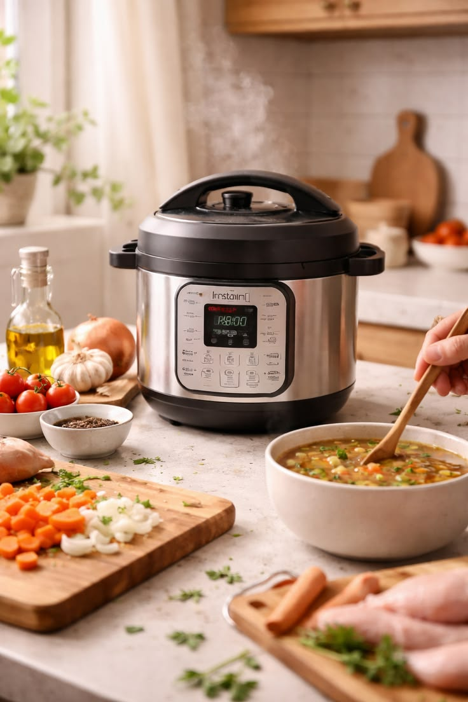
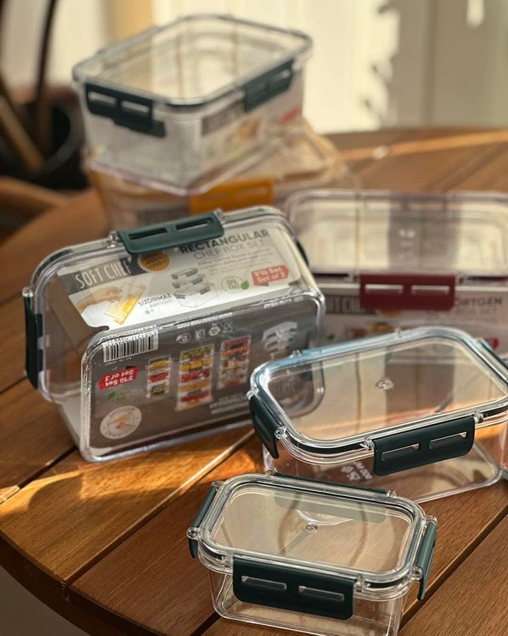
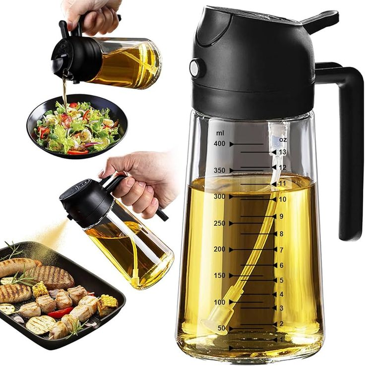

This Ninja Air Fryer is one of those kitchen upgrades you don’t realize you need until you try it. It makes crispy, delicious food with little to no oil, saving time while keeping meals healthier and easier.
It replaces multiple appliances and makes cooking feel effortless. From crispy fries to roasted chicken, everything comes out better and faster.

This Instant Pot is a true all-in-one kitchen essential. It replaces multiple devices and helps you cook meals faster, easier, and with less effort.
Perfect for busy lifestyles — it simplifies cooking while still giving you full control over your meals. One device replaces an entire kitchen setup.

A clean kitchen starts with organization. These glass containers make meal prep, storage, and leftovers simple while keeping everything fresh and visible.
Plastic containers stain and break over time. Glass keeps your food fresher and makes your fridge look organized and aesthetic.

This simple oil sprayer completely changes how you cook. It gives you full control over oil usage, helping you cook healthier meals without sacrificing flavor.
Most people use too much oil without realizing it. This tool gives precise control, making meals healthier and cleaner while still tasting great.